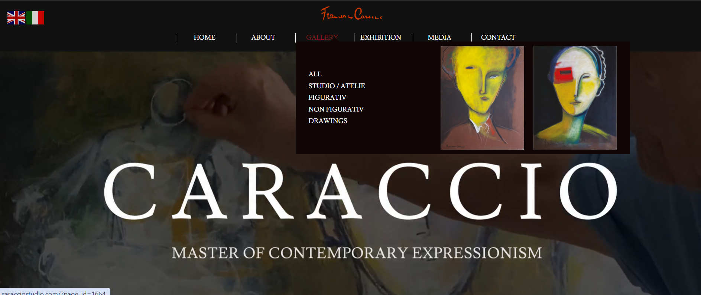

Sofie
Under uddannelse som webudviler

Projekter

Carraccio
I dette projekt skulle vi lave en hjemmeside...
Byggefidusen
Byggefidusen var et projekt for et byggefirma...
Under uddannelse som webudviler

I dette projekt skulle vi lave en hjemmeside...
Byggefidusen var et projekt for et byggefirma...